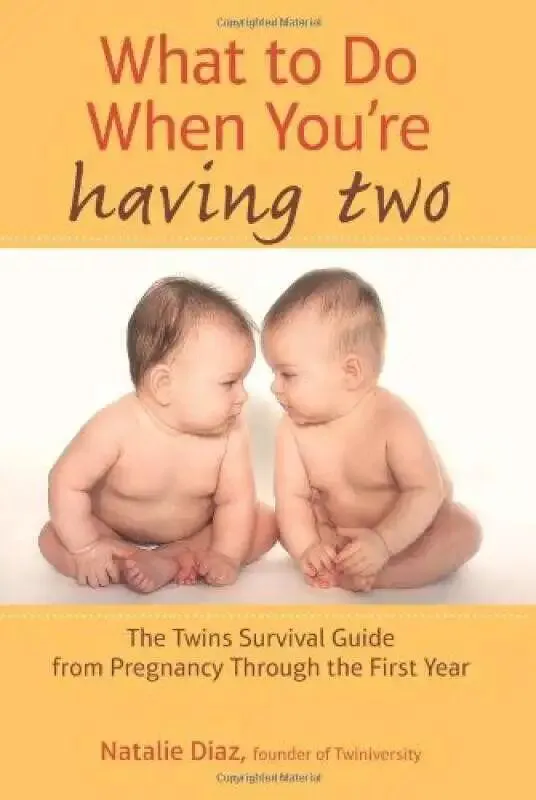
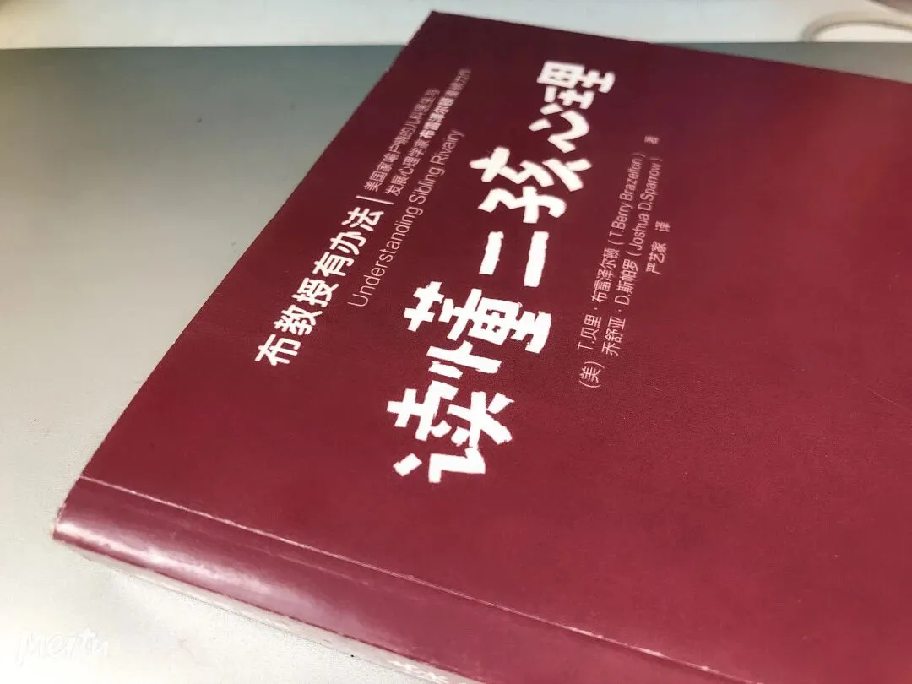
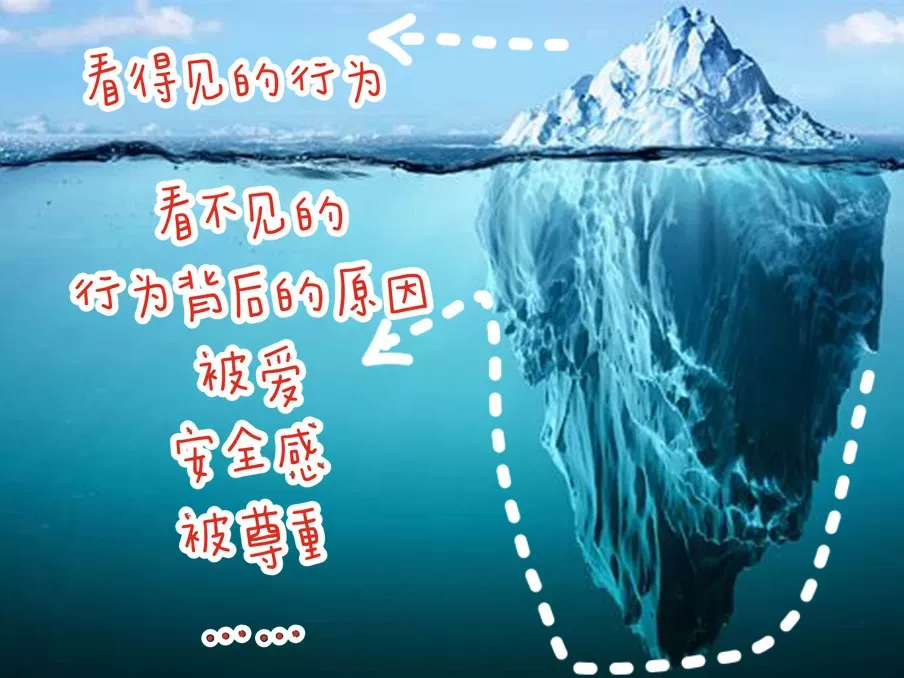

孖仔帮
公众号ID：twinsbang
关注
文|圆圈妈
网图|侵删
经常有人问我，国内有没有专门教人养育双胞胎的书籍？
--呃，实不相瞒，我也在寻找中，如果哪位有，请评论区留言分享给大家，谢谢。
曾经，当知道怀的是双胞胎时，我就四处寻找这方面的书籍，APP或网站，但一直找到现在，我的双胞胎都5岁了，依然无果。
国外倒是有很多教人养育双胞胎的书籍，比如《what to do when you are having two》我也曾试过将其翻译成中文，但可能国情不一样，读起来有点水土不服的感觉，我必须加入很多自己的想法才不至于词不达意。最后，能力有限，精力不够，翻译成中文的想法就作罢了。
这5年来，带着圆圈去过最多的地方就是图书馆，给他们选绘本，顺便也给自己选一些适合家长看的育儿书籍。
以前，不觉得这些育儿书有什么好看，读起来像看天书一样，没看几页就哈欠连连；现在，当看到一些说到点子上的育儿书时，顿时相见恨晚。
圆圈两兄弟成长到每个阶段，总会遇到不同的养育问题，我习惯带着这些问题去书里找线索，找思路，找解决办法，每一次的寻找和阅读都给我带来前所未有的收获。
现在的我早已熬过了对养育双胞胎的迷茫焦虑期，再也不会刻意去寻找这类书籍了，而是有了自己的方向，清楚哪些育儿书更适合自己和孩子，对自己在育儿路上的升级打怪打更有帮助。
今日这篇是分享我读育儿书籍的心得，作为双胞胎家长，哪些书本更适合我们这类特殊人群看。
让人焦虑的书，不看
怎么知道这本书让人焦虑？
如果你看着这本书，越看越觉得自己为人父母很失败，越看越觉得别人家的孩子怎么看都是香喷喷的，自己家的孩子却如烂泥一般扶不上墙，甚至觉得自己做什么事都不如人，从而万念俱灰。
那就不要看了，即便这本书获得多少大奖，多么畅销，又有众多大咖们做背书，不适合自己看的书终究就是白纸黑字而已。
我特别反感那些不结合实际，通篇都是理论的书，本来就带着一肚子疑问来找答案，结果还要费脑费力去琢磨那些条条框框，还要时刻注意那些应不应该，可不可以，要不要…让人看了更加一头雾水。
也不喜欢看所谓“成功人士”的晒娃心得，炫耀自己教育子女有多成功，这除了让我羡慕妒忌恨，还让我更加自渐形秽，同样是为人父母，为何别人岁月静好，而自己却一地鸡毛？这让我更加挫败了。
我们看育儿书籍大多是为了寻找解决办法或是为了寻求内心的慰藉，若并没有带来实用性的建议，反而让人越看越焦虑，越不知所措，那就果断弃之！
让人打鸡血的书，必看
有些书，会让人内心平静下来，读到某个点子，某个情节，总会让人有一股忍不住拍案叫绝的冲动，甚至还有相见恨晚的感觉。
“哦，原来我不孤单，看别人也跟我一样有这种育儿苦恼。”
“看，别人家的孩子也有这个问题，放心多了。”
“...”
有些书，没有条条框框的理论，书里写的都是些真枪实弹的育儿场景，有血有肉，坦率实在，智慧幽默...会让人感同身受，真实可触。
圆圈5月龄时，我抽空看了《双胞胎伊莲》系列的书，书中描述的那些养育双胞胎的鸡飞狗跳，让人啼笑皆非，笑完想哭，哭完想笑...
那就是我当时的真实写照，看完后觉得宽慰不少，内心那点“幸灾乐祸”心里，一点点转化成动力和勇气，让我更加有信心去面对自己的狼狈不堪，接受追求完美却早已千疮百孔的自己。
有些书，会结合心理学理论，给到一些心理服务，通过常见的实例告诉家长，孩子们在各个阶段不可理喻的行为其实是多么正常的，给过度焦虑家长们减负减压。
比如《斯波克父母经》《读懂二孩心里》，我最近在疯狂研究这两本书，因为愈发觉得对圆圈两兄弟的教育问题有点力不从心了，感觉目前的道行还不够，还得继续修炼才行。
书里写到那些手足间吵架打架抢玩具，原来都是自然正常，无可避免的，那些作息倒退，爱撒谎，爱告状，易激惹…也是孩子们成长中的一部分…
这让我如释重负，心态平和了许多，我只需要摘掉有色眼镜，耐心地包容他们便可。
有什么书单推荐吗？
我知道你们都喜欢抄作业，希望看到最后就是一系列书单，
抱歉哦，这次没有！只说说我在选书时的个人见解，
孕产方面，如产检注意事项，孕期食谱，养胎，保胎等；
新生儿护理，如湿疹，黄疸，奶睡等；
小月龄宝宝的喂养，如母乳，配方奶，辅食添加等；
一些疾病护理，如发烧，咳嗽，腹泻…
以上知识，如不懂，特别是萌新父母想多了解，建议优先参考有医学背景的人写的书；若感兴趣还可以继续深挖，比如看相应的教材，说不定研究完毕后，你就是下一个崔神哦。
也可关注大医院和权威诊所的公众号和自身是医生写的公众号推文，有专业医生做背书，可信度更高，更有参考价值。
但，诸如##妈妈，##育儿，##爸爸…这些自媒体类型的信息，不建议全信，因为不够权威，大多较片面，可能有错误，容易误导。
若你经常被双胞胎手足间的小纠纷困扰而无计可施，可选二孩家庭教育书籍，书中有很多二孩家庭的常见案例，会让你感觉找到知音，还有实用有效的沟通方式帮你解决燃眉之急。
若实在不知道看什么书，不知道怎么教育双胞胎，那就看儿童心理发展这块的书籍，多了解孩子们成长中的内心世界，比如皮亚杰儿童心理学，认知学，智力学……
P.S：这些书偏理论，但若能结合实际的育儿难题，很容易就能茅塞顿开，我无法解释这种无师自通的阅读能力究竟为何，可能是为人母的本能吧。
有句话说的极是，管孩子不如懂孩子。
双胞胎孩子就是两座巨大的冰山，我们往往只看到冰山的一角，只有充分了解孩子们在想什么，做出恼人行为的背后那些动机，我们才能站在孩子的立场上，真正理解孩子，包容他们，才不至于对他们的行为过分恼怒。
知道的真相越多，越让你胸有成竹，处事不惊，越让你觉得眼前的这两只熊孩子，除了调皮可爱，没别的。
因为那就是成长，再正常不过了！
既然如此，还焦虑个啥子呢？
港真，随着圆圆圈圈的成长，我经常有种花非花雾非雾的感觉，对双胞胎的养育和教育，觉得简单，又看似很难，实际行动起来更是难上加难，但每次总能守得云开见月明。
现在，我对专门教人养育双胞胎的书籍早已是醉翁之意不在酒，而在于“以我为主，为我所用”。
双胞胎，其实说白了，就是二孩家庭中的特殊群体，共性与个性并存。二孩家庭常见的教养问题和矛盾，双胞胎家庭其实都需要考虑到，只是需要考虑得更细致一些，更复杂一些。
-END-
今日互动话题
#来分享吧#
哪些育儿书籍特别适合萌新双胞胎父母阅读？
评论区聊一聊呗！
微信公众号：孖仔帮
ID : twinsbang
专注双胞胎孕育，养育，教育经验分享
扫码关注我们
点一下你会更好看耶



